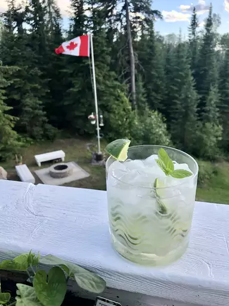

Back To the Main Page
Mojito

The Real OG Mojito
A mojito is a classic highball drink that originated in Cuba.
Not surprisingly, this cocktail uses ingredients indigenous to Cuba, including rum, lime, mint, and sugar.
The mixture is topped off with a little club soda to create a thirst-quenching libation.
It requires a bit more labor than many mixed drinks, as it involves first muddling fresh mint, lime, and sugar together to release the flavors.
But it's well worth it for a refreshing, fizzy, and mildly sweet rum cocktail that remains one of the most popular to this day.
Ingredients
- 10 fresh mint leaves
- 1/2 medium lime, cut into 3 wedges, devided
- 2 tablespoons white sugar, or to taste
- 1 cup ice cubes, or as needed
- 11/2 fluid ounces white rum
- 1/2 cup club soda, or as needed
Direction:
Step 1
- Place mint leaves and 1 lime wedge into a sturdy glass. Use a muddler and crush to release mint oils and lime juice.
Step 2
- Add remaining lime wedges and 2 tablespoons sugar, and muddle again to release the lime juice. Do not strain the mixture.
Step 3
- Fill the glass almost to the top with ice. Pour in rum and fill the glass with club soda.
Step 4
- Stir, taste, and add more sugar if desired.
Back to top